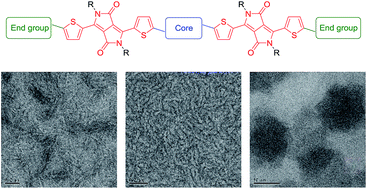
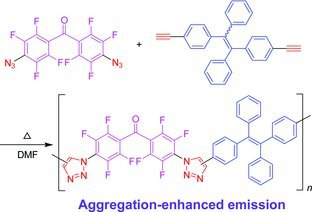
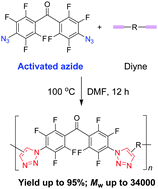

王强 (Mike)
OLED材料专家
经验专长
|
工作经历
|
教育背景
|
论文专利
|
联系方式
|
文档下载
经验专长
设计
OLED发光体
: TADF以及荧光分子等。
分析分子
结构与性能
之间的联系。
八年多
有机合成
经验。
四年多有机电子
器件制备
经验（溶液法和蒸镀），对器件物理 (OPV & OLED) 有深刻的理解。
两年多关于
人工智能辅助分子设计
的项目经验（计算机生成分子结构及快速筛选）。
英语
流利，善于交流和作报告（托福 110分）。
工作经历
2018年8月 – 目前
OLED材料专家
,
CYNORA
, 德国
2017年10月 – 2018年5月
博士后
, R. A. J. Janssen 教授课题组, 化学与化工学院,
TU/e
, 荷兰
教育背景
2013年9月– 2017年9月
博士
, R. A. J. Janssen 教授课题组, 化学与化工学院,
TU/e
, 荷兰
2010年9月 – 2013年3月
硕士
, 唐本忠院士课题组, 高分子系, 浙江大学
2006年9月 – 2010年7月
学士
, 高分子系, 浙江大学
论文专利
US2020290941A1
"Organic Molecules for Optoelectronic Devices",
Wang
et al., Sep 17, 2020 (其它专利尚未公开)
Solution-processed small-molecule organic solar cells
,
Q. Wang
, 博士论文, ISBN: 978-90-386-4341-0
Diketopyrrolopyrrole-Based Conjugated Polymers with Perylene Bisimide Side Chains for Single-Component Organic Solar Cells
, W. Lai, C. Li, J. Zhang, F. Yang, F. J. M. Colberts, B. Guo,
Q. Wang
, M. Li, A. Zhang, R. A. J. Janssen, M. Zhang and W. Li, Chem. Mater., 2017, 29, 7073
Structure–property relationships for bis-diketopyrrolopyrrole molecules in organic photovoltaics
,
Q. Wang
, J. J. van Franeker, B. J. Bruijnaers, M. M. Wienk and R. A. J. Janssen, J. Mater. Chem. A, 2016, 4, 10532

Asymmetric Diketopyrrolopyrrole Conjugated Polymers for Field-Effect Transistors and Polymer Solar Cells Processed from a Nonchlorinated Solvent
, Y. Ji, C. Xiao,
Q. Wang
, J. Zhang, C. Li, Y. Wu, Z. Wei, X. Zhan, W. Hu, Z. Wang, R. A. J. Janssen and W. Li, Adv. Mater., 2016, 28, 943
Perfluoroalkyl-substituted conjugated polymers as electron acceptors for all-polymer solar cells: the effect of diiodoperfluoroalkane additives
, A. Zhang,
Q. Wang
, R. A. A. Bovee, C. Li, J. Zhang, Y. Zhou, Z. Wei, Y. Li, R. A. J. Janssen, Z. Wang and W. Li, J. Mater. Chem. A, 2016, 4, 7736
Effect of Alkyl Side Chains of Conjugated Polymer Donors on the Device Performance of Non-Fullerene Solar Cells
, D. Xia, Y. Wu,
Q. Wang
, A. Zhang, C. Li, Y. Lin, F. J. M. Colberts, J. J. Van Franeker, R. A. J. Janssen, X. Zhan, W. Hu, Z. Tang, W. Ma and W. Li, Macromolecules, 2016, 49, 6445
Conjugated polymers with deep LUMO levels for field-effect transistors and polymer–polymer solar cells
, A. Zhang, C. Xiao, D. Meng,
Q. Wang
, X. Zhang, W. Hu, X. Zhan, Z. Wang, R. A. J. Janssen and W. Li, J. Mater. Chem. C, 2015, 3, 8255
A Polytriazole Synthesized by 1,3-Dipolar Polycycloaddition Showing Aggregation-Enhanced Emission and Utility in Explosive Detection
,
Q. Wang
, M. Chen, B. Yao, J. Wang, J. Mei, J. Sun, A. Qin and B. Tang, Macromol. Rapid Commun., 2013, 34, 796

Metal-free click polymerizations of activated azide and alkynes
,
Q. Wang
, H. Li, Q. Wei, J. Sun, J. Wang, X. Zhang, A. Qin and B. Tang, Polym. Chem., 2013, 4, 1396

联系方式
MikeWangCareer@outlook.com
领英
文档下载
简历